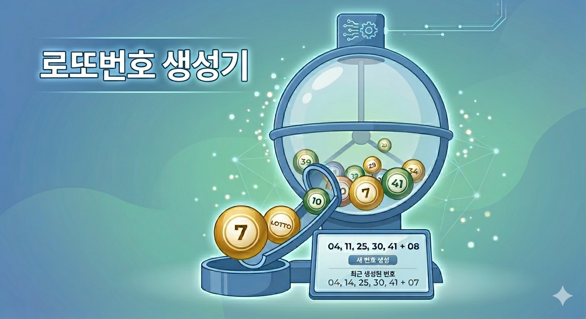
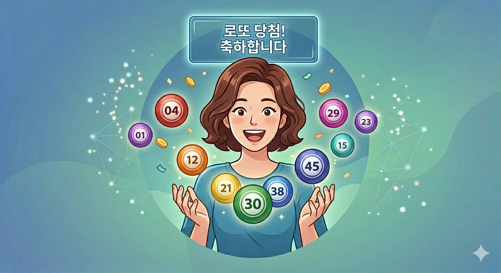

자동/수동 사이에서 고민될 때, ‘제외수’로 취향을 섞고 공이 튀어나오는 순간까지 직접 지켜본 체험 기록입니다.

매주 토요일 저녁 8시 45분, 심장이 평소보다 조금 더 빨리 뛰는 시간입니다.
로또 한 장 지갑에 넣고 일주일을 버티는 우리에게 그 짧은 추첨 방송은 일주일의 피로를 씻어주는 작은 축제 같은 시간이죠.
저는 보통 '자동'으로 사는 편이었는데, 가끔 명세서를 보면 "아, 이 숫자는 진짜 안 나올 것 같은데..." 싶은 번호들이 꼭 섞여 있더라고요.
그래서 이번엔 제 직감을 조금 섞어보려고 이 로또 번호 생성기를 직접 사용해봤습니다.
단순히 숫자만 툭 뱉는 게 아니라, 실제 추첨기처럼 공이 돌아가는 걸 지켜보니 느낌이 확 다르네요.
가장 먼저 한 일은 제외수 설정이었습니다.
저는 이상하게 4번과 44번은 손이 잘 안 가더라고요.
화면에서 '제외할 숫자 설정' 버튼을 누르고 평소 안 나오던 숫자들을 하나하나 클릭해서 뺐습니다.
최대 39개까지 뺄 수 있다는데, 너무 많이 빼면 확률이 왜곡될까 봐 제가 정말 싫어하는 5개 번호만 골라냈습니다.
이렇게 '내가 원치 않는 숫자'를 걸러내고 나니, 왠지 당첨 확률이 1%라도 더 올라간 것 같은 기분 좋은 착각이 들더군요.
나만의 행운의 번호를 지금 바로 추출해보세요.
로또 번호 생성기 바로가기
이 생성기의 백미는 단연 실시간 애니메이션입니다.
'시작하기' 버튼을 누르자마자 파란색 투명 돔 안에서 40개의 공이 요란하게 섞이기 시작했습니다.
캔버스 위에서 공들이 서로 부딪히며 튀어오르는 모습이 꽤 생동감 넘치더라고요.
잠시 후, 돔이 멈추면서 위쪽 구멍으로 공이 하나씩 톡! 하고 튀어나옵니다.
노란색 7번, 빨간색 23번... 공이 하나씩 나올 때마다 화면 하단에 Live 뱃지가 깜빡이며 번호가 채워지는 걸 보니, 저도 모르게 주먹을 꽉 쥐게 되었습니다.
단순히 결과만 보는 게 아니라 '추출되는 과정'을 함께하니 확실히 몰입감이 생겼습니다.
표 1. 로또 당첨 기준 요약
| 순위 | 당첨 조건 | 비고 |
|---|---|---|
| 1등 | 번호 6개 모두 일치 | 인생 역전 |
| 2등 | 5개 일치 + 보너스볼 | 대박 |
| 3등 | 번호 5개 일치 | 축하합니다 |
| 4등 | 번호 4개 일치 | 5만 원 |
※ 4등과 5등 당첨금은 고정 금액이며, 1~3등은 판매량에 따라 변동됩니다.
Q. 정말 무작위로 뽑히는 게 맞나요?
A. 네, 자바스크립트의 난수 생성 엔진을 기반으로 매번 독립적인 확률로 추출됩니다. 물리 엔진을 이용해 공들이 부딪히는 궤적을 계산하므로 매번 다른 결과가 나옵니다.
Q. 제외수를 너무 많이 설정하면 어떻게 되나요?
A. 최소 6개 번호는 남아있어야 추출이 가능합니다. 너무 많이 제외하면 남은 번호들끼리만 조합되므로, 본인의 직감에 따라 적절히 조절하는 것이 재미 포인트입니다.
Q. 최근 당첨번호는 언제 업데이트되나요?
A. 매주 토요일 공식 추첨 직후 데이터가 동기화됩니다. '최근 당첨번호 가져오기' 버튼을 누르면 최신 10회차 정보를 바로 확인할 수 있습니다.
Q. 번호 색깔은 실제 로또 공과 같나요?
A. 네, 1~10번(노랑), 11~20번(파랑) 등 실제 로또 공 색상 규정을 그대로 적용하여 시각적 몰입감을 높였습니다.
Q. 모바일에서도 잘 보이나요?
A. 반응형으로 제작되어 스마트폰 브라우저에서도 추첨 애니메이션을 끊김 없이 감상하실 수 있습니다.
로또는 결국 확률의 게임이지만, 그 확률을 기다리는 마음만큼은 정성스러워야 한다고 생각합니다.
직접 제외수를 고민해보고, 공이 튀어나오는 과정을 지켜보며 번호를 맞추는 즐거움은 일상의 작은 활력소가 되네요.
이번 주 토요일, 여러분에게도 1등이라는 기적 같은 행운이 찾아가길 진심으로 응원합니다!
여러분만의 행운의 숫자를 지금 바로 만나보세요.
지금 바로 행운의 공을 뽑아보세요.
행운의 번호 생성하러 가기